library(tidyverse)
library(patchwork)Generating Random Numbers
Credit
This guide is a minimally adapted version of Andrew Heiss’ guide on generating random numbers. The reason I don’t simply link his guide, besides the minimal adaptations, is to ensure it doesn’t disappear from the internet for whatever reason.
In many situations, it is helpful to generate synthetic (i.e. not real) data sets, e.g. when you want to simulate Null worlds, or do a power analysis for planning the sample size of a future study.
This guide shows you how to simulate variables, i.e. generating random numbers, based on different distributions.
To follow through with the examples, make sure you load the libraries we’ll use throughout:
Summary
You will probably regularly get back to this guide on several occasions, so upfront, here is a quick overview of the main distributions and functions that we’ll cover:
| Distribution | Description | Situations | Parameters | Code |
|---|---|---|---|---|
| Uniform | Numbers between a minimum and maximum; everything equally likely | ID numbers, age | min, max |
sample() or runif() |
| Normal | Numbers bunched up around an average with a surrounding spread; numbers closer to average more likely | Income, education, most types of numbers that have some sort of central tendency | mean, sd |
rnorm() |
| Truncated normal | Normal distribution + constraints on minimum and/or maximum values | Anything with a normal distribution | mean, sd, a (minimum), b (maximum) |
truncnorm::rtruncnorm() |
| Beta | Numbers constrained between 0 and 1 | Anything with percents; anything on a 0–1(00) scale; anything, really, if you use rescale() to rescale it |
shape1 ($\alpha$), shape2 ($\beta$) ($\frac{\alpha}{\alpha + \beta}$) |
rbeta() |
| Binomial | Binary variables | Treatment/control, yes/no, true/false, 0/1 | size, prob |
sample(..., prob = 0.5) or rbinom() |
Seeds
When R (or any computer program, really) generates random numbers, it uses an algorithm to simulate randomness. This algorithm always starts with an initial number, or seed. Typically it will use something like the current number of milliseconds since some date, so that every time you generate random numbers they’ll be different. Look at this, for instance:
# Choose 3 numbers between 1 and 10
sample(1:10, 3)[1] 9 4 7# Choose 3 numbers between 1 and 10
sample(1:10, 3)[1] 5 6 9They’re different both times.
That’s ordinarily totally fine, but if you care about reproducibility (like having a synthetic dataset with the same random values, or having jittered points in a plot be in the same position every time you render), it’s a good idea to set your own seed. This ensures that the random numbers you generate are the same every time you generate them.
Do this by feeding set.seed() some numbers. It doesn’t matter what number you use—it just has to be a whole number. People have all sorts of favorite seeds:
113421234123458675309
You could even go to random.org and use atmospheric noise to generate a seed, and then use that in R.
Here’s what happens when you generate random numbers after setting a seed:
# Set a seed
set.seed(1234)
# Choose 3 numbers between 1 and 10
sample(1:10, 3)[1] 10 6 5# Set a seed
set.seed(1234)
# Choose another 3 numbers between 1 and 10
sample(1:10, 3)[1] 10 6 5They’re the same!
Once you set a seed, it influences any function that does anything random, but it doesn’t reset. For instance, if you set a seed once and then run sample() twice, you’ll get different numbers the second time, but you’ll get the same different numbers every time:
# Set a seed
set.seed(1234)
# Choose 3 numbers between 1 and 10
sample(1:10, 3)[1] 10 6 5sample(1:10, 3) # This will be different![1] 9 5 6# Set a seed again
set.seed(1234)
# Choose 3 numbers between 1 and 10
sample(1:10, 3)[1] 10 6 5sample(1:10, 3) # This will be different, but the same as before![1] 9 5 6Typically it’s easiest to just include set.seed(SOME_NUMBER) at the top of your script after you load all the libraries. Some functions have a seed argument, and it’s a good idea to use it: position_jitter(..., seed = 1234).
Distributions
When you ask someone to choose a number between 1 and 10, any of those numbers should be equally likely. 1 isn’t really less common than 5 or anything. In some situations, though, there are numbers that are more likely to appear than others (i.e. when you roll two dice, it’s pretty rare to get a 2, but pretty common to get a 7). These different kinds of likelihood change the shape of the distribution of possible values. There are hundreds of different distributions, but for the sake of generating data, there are only a few that you need to know.
Uniform distribution
In a uniform distribution, every number is equally likely. This is the “pick a number between 1 and 10” scenario, or rolling a single die. There are a couple ways to work with a uniform distribution in R: (1) sample() and (2) runif().
sample()
The sample() function chooses an element from a list.
For instance, let’s pretend we have six possible numbers (like a die, or like 6 categories on a survey), like this:
possible_answers <- c(1, 2, 3, 4, 5, 6) # We could also write this as 1:6 insteadIf we want to randomly choose from this list, you’d use sample(). The size argument defines how many numbers to choose.
# Choose 1 random number
sample(possible_answers, size = 1)[1] 4# Choose 3 random numbers
sample(possible_answers, size = 3)[1] 2 6 5One important argument you can use is replace, which essentially puts the number back into the pool of possible numbers. Imagine having a bowl full of ping pong balls with the numbers 1–6 on them. If you take the number “3” out, you can’t draw it again. If you put it back in, you can pull it out again. The replace argument puts the number back after it’s drawn:
# Choose 10 random numbers, with replacement
sample(possible_answers, size = 10, replace = TRUE) [1] 6 4 6 6 6 4 4 5 4 3If you don’t specify replace = TRUE, and you try to choose more numbers than are in the set, you’ll get an error:
# Choose 8 numbers between 1 and 6, but don't replace them.
# This won't work!
sample(possible_answers, size = 8)Error in sample.int(length(x), size, replace, prob): cannot take a sample larger than the population when 'replace = FALSE'It’s hard to see patterns in the outcomes when generating just a handful of numbers, but easier when you do a lot. Let’s roll a die 1,000 times:
set.seed(1234)
die <- tibble(value = sample(possible_answers,
size = 1000,
replace = TRUE))
die |>
count(value)# A tibble: 6 × 2
value n
<dbl> <int>
1 1 161
2 2 153
3 3 188
4 4 149
5 5 157
6 6 192ggplot(die, aes(x = value)) +
geom_bar() +
labs(title = "1,000 rolls of a single die")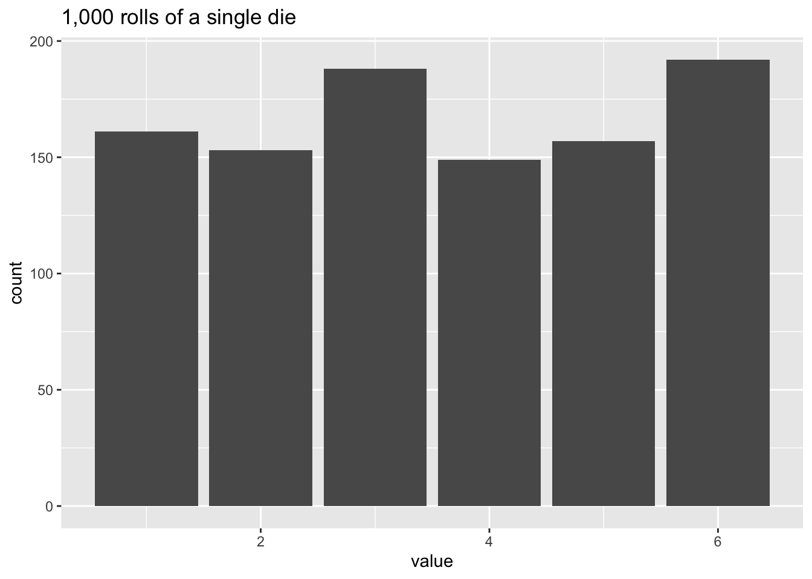
In this case, 3 and 6 came up more often than the others, but that’s just because of randomness. If we rolled the die 100,000 times, the bars should basically be the same:
set.seed(1234)
die <- tibble(value = sample(possible_answers,
size = 100000,
replace = TRUE))
ggplot(die, aes(x = value)) +
geom_bar() +
labs(title = "100,000 rolls of a single die")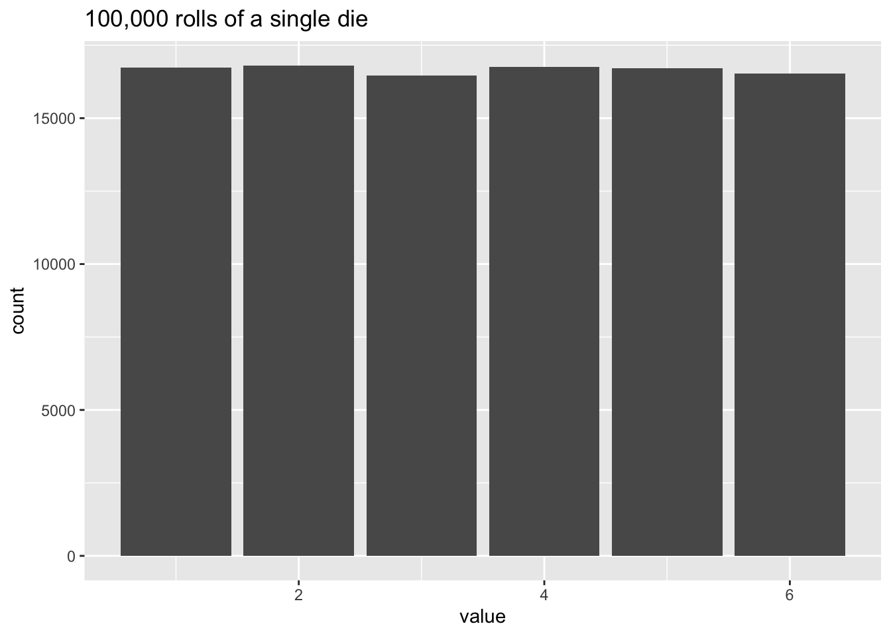
runif()
Another way to generate uniformly distributed numbers is to use the runif() function (which is short for “random uniform”, and which took me years to realize, and for years I wondered why people used a function named “run if” when there’s no if statement anywhere??)
runif() will choose numbers between a minimum and a maximum. These numbers will not be whole numbers. By default, the min and max are 0 and 1:
runif(5)[1] 0.09862408 0.96294192 0.88655414 0.05623182 0.44451637Here are 5 numbers between 35 and 56:
runif(5, min = 35, max = 56)[1] 46.82529 42.88636 37.74566 53.22182 46.13240Since these aren’t whole numbers, you can round them to make them look more realistic (like, if you were generating a column for age, you probably don’t want people who are 21.5800283 years old):
# Generate 5 people between the ages of 18 and 35
round(runif(5, min = 18, max = 35), 0)[1] 21 28 33 34 31You can confirm that each number has equal probability if you make a histogram. Here are 5,000 random people between 18 and 35:
set.seed(1234)
lots_of_numbers <- tibble(x = runif(5000, min = 18, max = 35))
ggplot(lots_of_numbers, aes(x = x)) +
geom_histogram(binwidth = 1, color = "white", boundary = 18)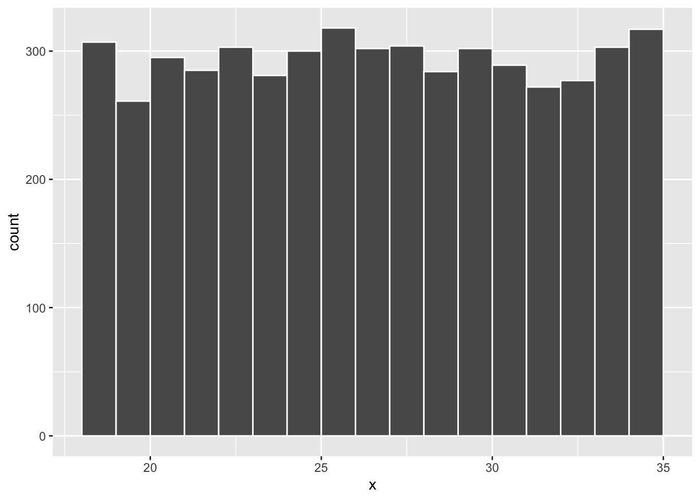
Normal distribution
The whole “choose a number between 1 and 10” idea of a uniform distribution is neat and conceptually makes sense, but most numbers that exist in the world tend to have higher probabilities around certain values—almost like gravity around a specific point. For instance, income in the United States is not uniformly distributed—a handful of people are really really rich, lots are very poor, and most are kind of clustered around an average.
The idea of having possible values clustered around an average is how the rest of these distributions work (uniform distributions don’t have any sort of central gravity point; all these others do). Each distribution is defined by different things called parameters, or values that determine the shape of the probabilities and locations of the clusters.
A super common type of distribution is the normal distribution. This is the famous “bell curve” you learn about in earlier statistics classes. A normal distribution has two parameters:
- A mean (the center of the cluster)
- A standard deviation (how much spread there is around the mean).
In R, you can generate random numbers from a normal distribution with the rnorm() function. It takes three arguments: the number of numbers you want to generate, the mean, and the standard deviation. It defaults to a mean of 0 and a standard deviation of 1, which means most numbers will cluster around 0, with a lot between −1 and 1, and some going up to −2 and 2 (technically 67% of numbers will be between −1 and 1, while 95% of numbers will be between −2–2ish)
rnorm(5)[1] -1.3662376 0.5392093 -1.3219320 -0.2812887 -2.1049469# Cluster around 10, with an SD of 4
rnorm(5, mean = 10, sd = 4)[1] 3.529581 7.105072 11.226964 10.902385 13.742864When working with uniform distributions, it’s easy to know how high or low your random values might go, since you specify a minimum and maximum number. With a normal distribution, you don’t specify starting and ending points—you specify a middle and a spread, so it’s harder to guess the whole range. Plotting random values is thus essential. Here’s 1,000 random numbers clustered around 10 with a standard deviation of 4:
set.seed(1234)
plot_data <- tibble(x = rnorm(1000, mean = 10, sd = 4))
head(plot_data)# A tibble: 6 × 1
x
<dbl>
1 5.17
2 11.1
3 14.3
4 0.617
5 11.7
6 12.0 ggplot(plot_data, aes(x = x)) +
geom_histogram(binwidth = 1, boundary = 0, color = "white")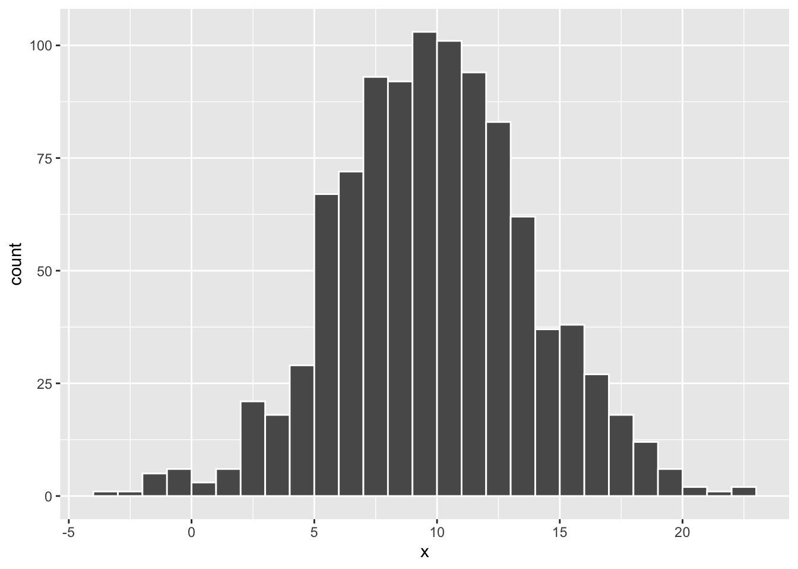
Neat. Most numbers are around 10; lots are between 5 and 15; some go as high as 25 and as low as −5.
Watch what happens if you change the standard deviation to 10 to make the spread wider:
set.seed(1234)
plot_data <- tibble(x = rnorm(1000, mean = 10, sd = 10))
head(plot_data)# A tibble: 6 × 1
x
<dbl>
1 -2.07
2 12.8
3 20.8
4 -13.5
5 14.3
6 15.1 ggplot(plot_data, aes(x = x)) +
geom_histogram(binwidth = 1, boundary = 0, color = "white")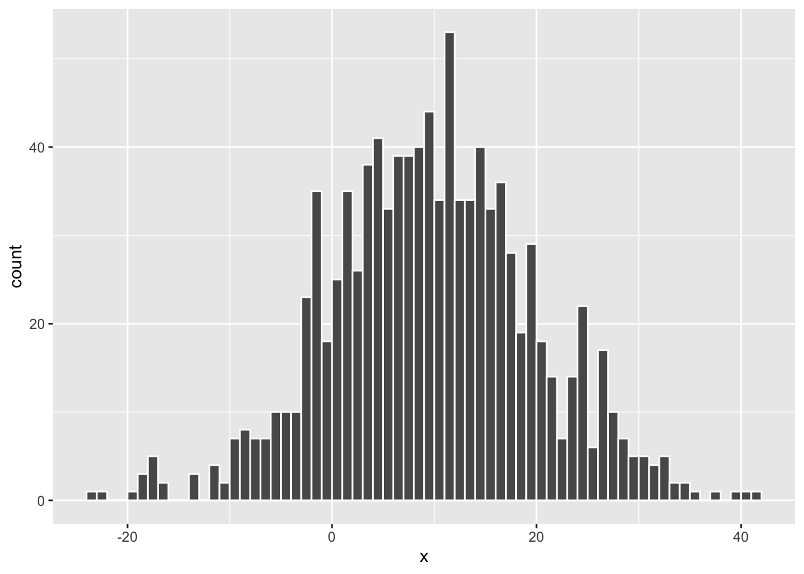
It’s still centered around 10, but now you get values as high as 40 and as low as −20. The data is more spread out now.
When simulating data, you’ll most often use a normal distribution just because it’s easy and lots of things follow that pattern in the real world. Incomes, ages, education, etc. all have a kind of gravity to them, and a normal distribution is a good way of showing that gravity. For instance, here are 1,000 simulated people with reasonable random incomes, ages, and years of education:
set.seed(1234)
fake_people <- tibble(income = rnorm(1000, mean = 40000, sd = 15000),
age = rnorm(1000, mean = 25, sd = 8),
education = rnorm(1000, mean = 16, sd = 4))
head(fake_people)# A tibble: 6 × 3
income age education
<dbl> <dbl> <dbl>
1 21894. 15.4 12.1
2 44161. 27.4 15.6
3 56267. 12.7 15.6
4 4815. 30.1 20.8
5 46437. 30.6 9.38
6 47591. 9.75 11.8 fake_income <- ggplot(fake_people, aes(x = income)) +
geom_histogram(binwidth = 5000, color = "white", boundary = 0) +
labs(title = "Simulated income")
fake_age <- ggplot(fake_people, aes(x = age)) +
geom_histogram(binwidth = 2, color = "white", boundary = 0) +
labs(title = "Simulated age")
fake_education <- ggplot(fake_people, aes(x = education)) +
geom_histogram(binwidth = 2, color = "white", boundary = 0) +
labs(title = "Simulated education")
fake_income + fake_age + fake_education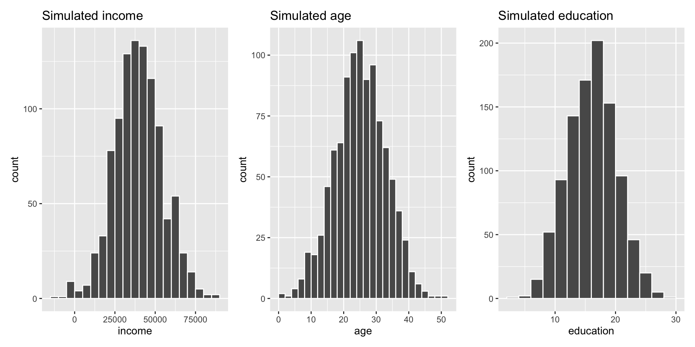
These three columns all have different centers and spreads. Income is centered around $45,000, going up to almost $100,000 and as low as −$10,000; age is centered around 25, going as low as 0 and as high as 50; education is centered around 16, going as low as 3 and as high as 28. Cool.
Again, when generating these numbers, it’s really hard to know how high or low these ranges will be, so it’s a good idea to plot them constantly. I settled on sd = 4 for education only because I tried things like 1 and 10 and got wild looking values (everyone basically at 16 with little variation, or everyone ranging from −20 to 50, which makes no sense when thinking about years of education). Really it’s just a process of trial and error until the data looks good and reasonable.
Truncated normal distribution
Sometimes you’ll end up with negative numbers that make no sense. Look at income in the plot above, for instance. Some people are earning −$10,000 year. The rest of the distribution looks okay, but those negative values are annoying.
To fix this, you can use something called a truncated normal distribution, which lets you specify a mean and standard deviation, just like a regular normal distribution, but also lets you specify a minimum and/or maximum so you don’t get values that go too high or too low.
R doesn’t have a truncated normal function built-in, but you can install the {truncnorm} package and use the rtruncnorm() function. A truncated normal distribution has four parameters:
- A mean (
mean) - A standard deviation (
sd) - A minimum (optional) (
a) - A maximum (optional) (
b)
For instance, let’s pretend you have a youth program designed to target people who are between 12 and 21 years old, with most around 14. You can generate numbers with a mean of 14 and a standard deviation of 5, but you’ll create people who are too old, too young, or even negatively aged!
set.seed(1234)
plot_data <- tibble(fake_age = rnorm(1000, mean = 14, sd = 5))
head(plot_data)# A tibble: 6 × 1
fake_age
<dbl>
1 7.96
2 15.4
3 19.4
4 2.27
5 16.1
6 16.5 ggplot(plot_data, aes(x = fake_age)) +
geom_histogram(binwidth = 2, color = "white", boundary = 0)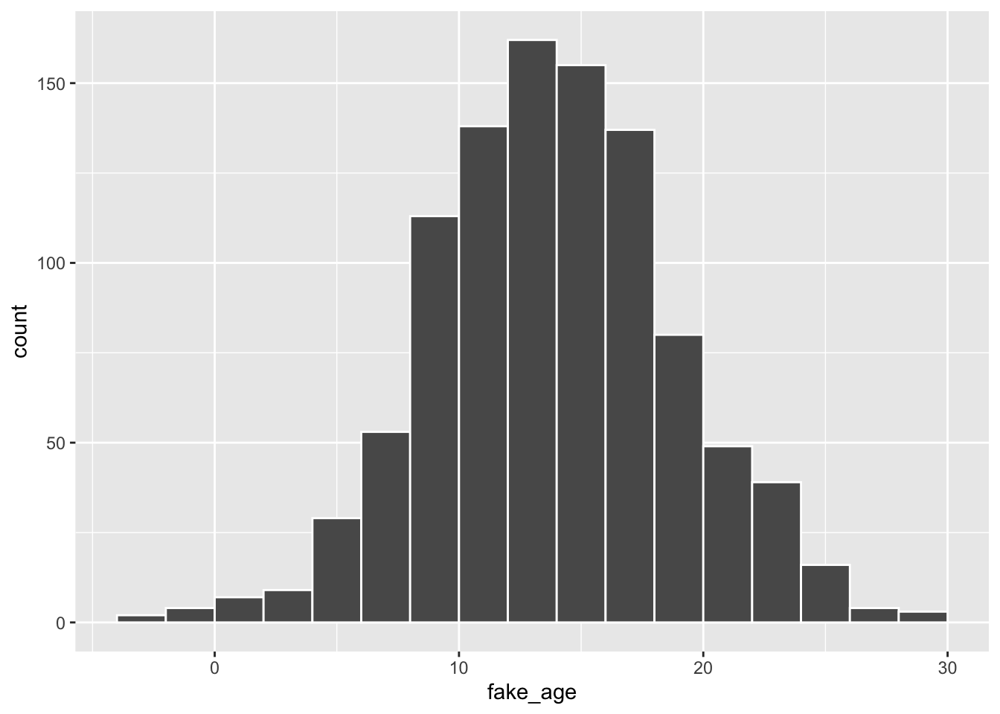
To fix this, truncate the range at 12 and 21:
library(truncnorm) # For rtruncnorm()
set.seed(1234)
plot_data <- tibble(fake_age = rtruncnorm(1000, mean = 14, sd = 5, a = 12, b = 21))
head(plot_data)# A tibble: 6 × 1
fake_age
<dbl>
1 15.4
2 19.4
3 16.1
4 16.5
5 14.3
6 18.8ggplot(plot_data, aes(x = fake_age)) +
geom_histogram(binwidth = 1, color = "white", boundary = 0)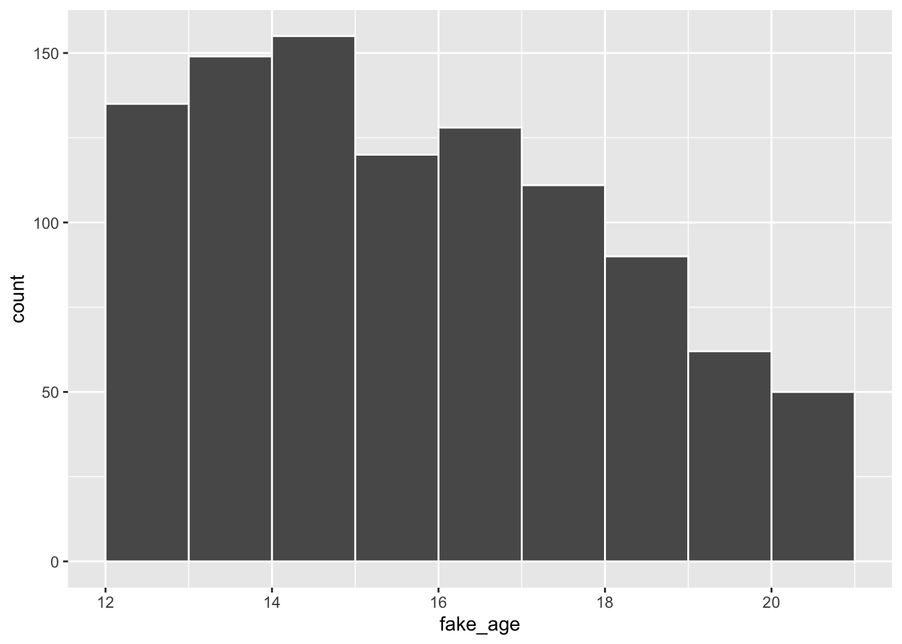
And voila! A bunch of people between 12 and 21, with most around 14, with no invalid values.
Beta distribution
Normal distributions are neat, but they’re symmetrical around the mean (unless you truncate them). What if your program involves a test with a maximum of 100 points where most people score around 85, but a sizable portion score below that. In other words, it’s not centered at 85, but is skewed left.
To simulate this kind of distribution, we can use a Beta distribution. Beta distributions are neat because they naturally only range between 0 and 1—they’re perfect for things like percentages or proportions or or 100-based exams.
Unlike a normal distribution, where you use the mean and standard deviation as parameters, Beta distributions take two non-intuitive parameters:
shape1shape2
What the heck are these shapes though?! This answer at Cross Validated does an excellent job of explaining the intuition behind Beta distributions and it’d be worth it to read it.
Basically, Beta distributions are good at modeling probabilities of things, and shape1 and shape2 represent specific parts of a probability formula.
Let’s say that there’s an exam with 10 points where most people score a 6/10. Another way to think about this is that an exam is a collection of correct answers and incorrect answers, and that the percent correct follows this equation:
\[ \frac{\text{Number correct}}{\text{Number correct} + \text{Number incorrect}} \]
If you scored a 6, you could write that as:
\[ \frac{6}{6 + 4} \]
To make it more general, we can use Greek variable names: \(\alpha\) for the number correct and \(\beta\) for the number incorrect, leaving us with this:
\[ \frac{\alpha}{\alpha + \beta} \]
Neat.
In a Beta distribution, the \(\alpha\) and \(\beta\) in that equation correspond to shape1 and shape2. If we want to generate random scores for this test where most people get 6/10, we can use rbeta():
set.seed(1234)
plot_data <- tibble(exam_score = rbeta(1000, shape1 = 6, shape2 = 4)) |>
# rbeta() generates numbers between 0 and 1, so multiply everything by 10 to
# scale up the exam scores
mutate(exam_score = exam_score * 10)
ggplot(plot_data, aes(x = exam_score)) +
geom_histogram(binwidth = 1, color = "white") +
scale_x_continuous(breaks = 0:10)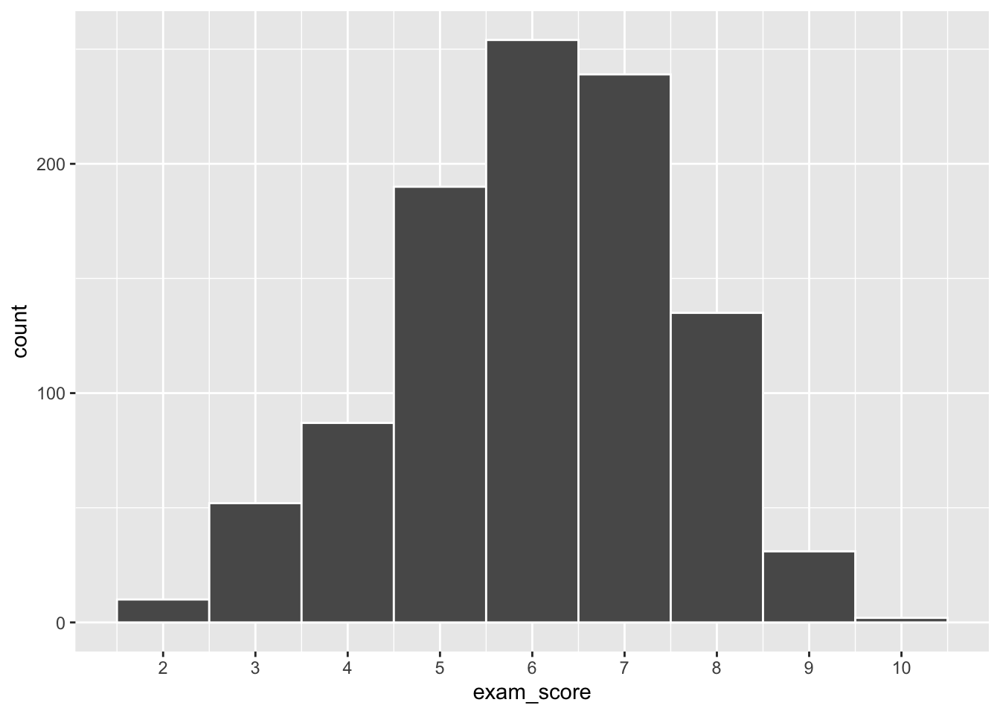
Most people score around 6, with a bunch at 5 and 7, and fewer in the tails. Importantly, it’s not centered at 6—the distribution is asymmetric.
The magic of—and most confusing part about—Beta distributions is that you can get all sorts of curves by just changing the shape parameters. To make this easier to see, we can make a bunch of different Beta distributions. Instead of plotting them with histograms, we’ll use density plots (and instead of generating random numbers, we’ll plot the actual full range of the distribution (that’s what dbeta and geom_function() do in all these examples)).
Here’s what we saw before, with \(\alpha\) (shape1) = 6 and \(\beta\) (shape2) = 4:
ggplot() +
geom_function(fun = ~dbeta(.x, shape1 = 6, shape2 = 4))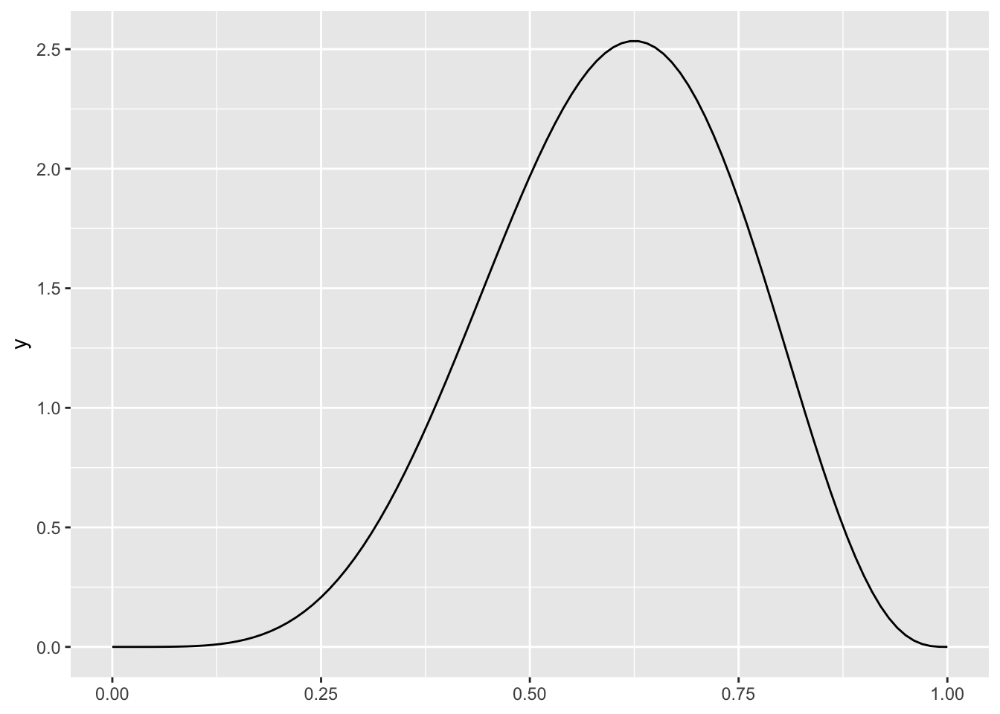
Again, there’s a peak at 0.6 (or 6), which is what we expected.
We can make the distribution narrower if we scale the shapes up. Here pretty much everyone scores around 50% and 75%.
ggplot() +
geom_function(fun = ~dbeta(.x, shape1 = 60, shape2 = 40))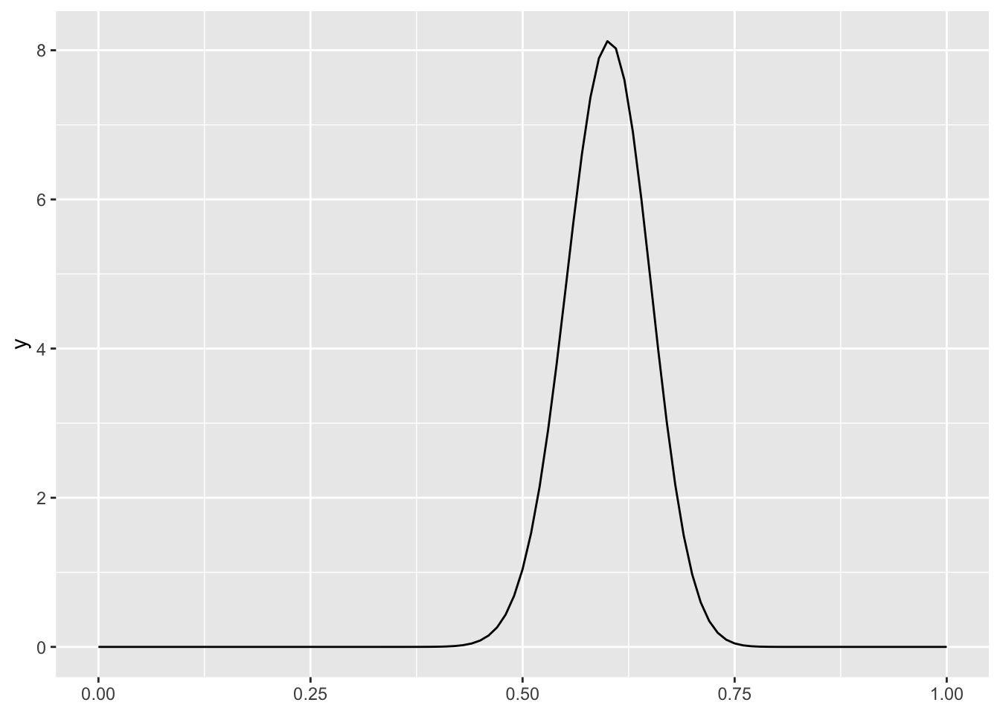
So far all these curves look like normal distributions, just slightly skewed. But when if most people score 90–100%? Or most fail? A Beta distribution can handle that too:
ggplot() +
geom_function(fun = ~dbeta(.x, shape1 = 9, shape2 = 1), color = "blue") +
geom_function(fun = ~dbeta(.x, shape1 = 1, shape2 = 9), color = "red")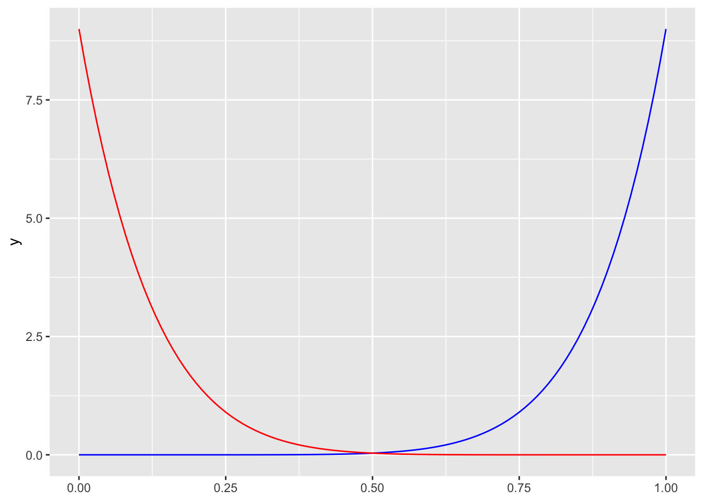
With shape1 = 9 and shape2 = 1 (or \(\frac{9}{9 + 1}\)) we get most around 90%, while shape1 = 1 and shape2 = 9 (or \(\frac{1}{1 + 9}\)) gets us most around 10%.
Check out all these other shapes too:
ggplot() +
geom_function(fun = ~dbeta(.x, shape1 = 5, shape2 = 5), color = "blue") +
geom_function(fun = ~dbeta(.x, shape1 = 2, shape2 = 5), color = "red") +
geom_function(fun = ~dbeta(.x, shape1 = 80, shape2 = 23), color = "orange") +
geom_function(fun = ~dbeta(.x, shape1 = 13, shape2 = 17), color = "brown")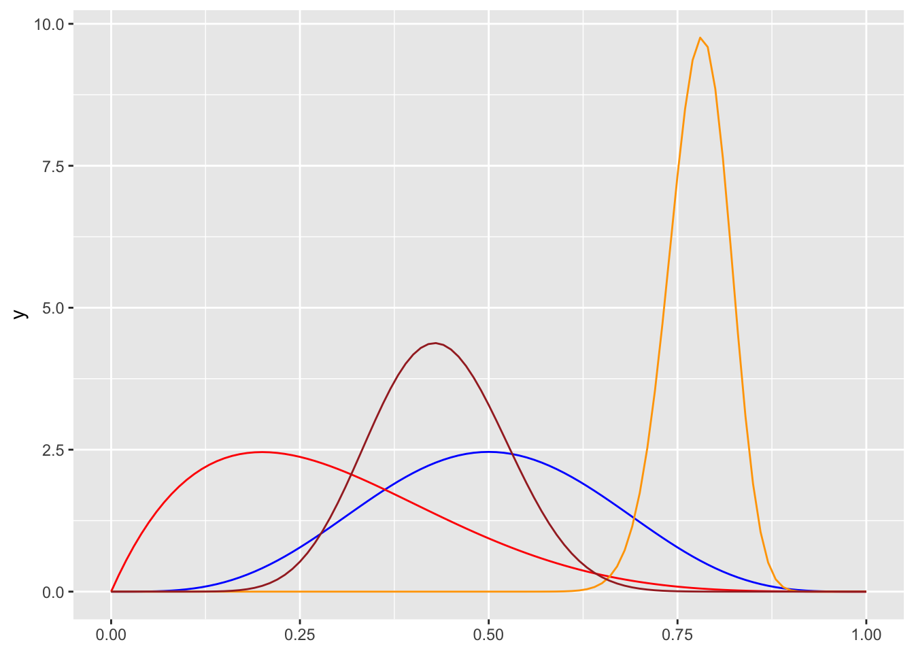
In real life, if I don’t want to figure out the math behind the \(\frac{\alpha}{\alpha + \beta}\) shape values, I end up just choosing different numbers until it looks like the shape I want, and then I use rbeta() with those parameter values. Like, how about we generate some numbers based on the red line above, with shape1 = 2 and shape2 = 5, which looks like it should be centered around 0.2ish (\(\frac{2}{2 + 5} = 0.2857\)):
set.seed(1234)
plot_data <- tibble(thing = rbeta(1000, shape1 = 2, shape2 = 5)) |>
mutate(thing = thing * 100)
head(plot_data)# A tibble: 6 × 1
thing
<dbl>
1 10.1
2 34.5
3 55.3
4 2.19
5 38.0
6 39.9 ggplot(plot_data, aes(x = thing)) +
geom_histogram(binwidth = 2, color = "white", boundary = 0)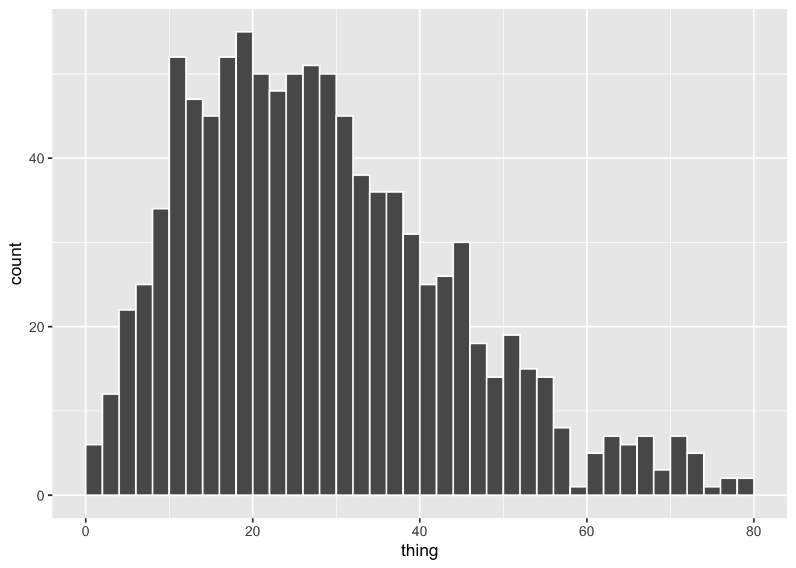
It worked! Most values are around 20ish, but some go up to 60–80.
Binomial distribution
Often you’ll want to generate a column that only has two values: yes/no, treated/untreated, before/after, big/small, red/blue, etc. You’ll also likely want to control the proportions (25% treated, 62% blue, etc.). You can do this in two different ways: (1) sample() and (2) rbinom().
sample()
We already saw sample() when we talked about uniform distributions. To generate a binary variable with sample(), just feed it a list of two possible values:
set.seed(1234)
# Choose 5 random T/F values
possible_things <- c(TRUE, FALSE)
sample(possible_things, 5, replace = TRUE)[1] FALSE FALSE FALSE FALSE TRUER will choose these values with equal/uniform probability by default, but you can change that in sample() with the prob argument. For instance, pretend you want to simulate an election. According to the latest polls, one candidate has an 80% chance of winning. You want to randomly choose a winner based on that chance. Here’s how to do that with sample():
set.seed(1234)
candidates <- c("Person 1", "Person 2")
sample(candidates, size = 1, prob = c(0.8, 0.2))[1] "Person 1"Person 1 wins!
It’s hard to see the weighted probabilities when you just choose one, so let’s pretend there are 1,000 elections:
set.seed(1234)
fake_elections <- tibble(winner = sample(candidates,
size = 1000,
prob = c(0.8, 0.2),
replace = TRUE))
fake_elections |>
count(winner)# A tibble: 2 × 2
winner n
<chr> <int>
1 Person 1 792
2 Person 2 208ggplot(fake_elections, aes(x = winner)) +
geom_bar()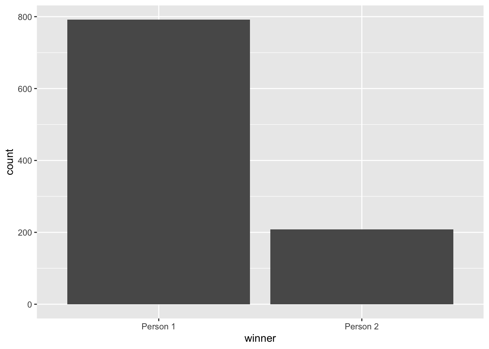
Person 1 won 792 of the elections. Neat.
(This is essentially what election forecasting websites like FiveThirtyEight do! They just do it with way more sophisticated simulations.)
rbinom()
Instead of using sample(), you can use a formal distribution called the binomial distribution. This distribution is often used for things that might have “trials” or binary outcomes that are like success/failure or yes/no or true/false
The binomial distribution takes two parameters:
size: The number of “trials”, or times that an event happensprob: The probability of success in each trial
It’s easiest to see some examples of this. Let’s say you have a program that has a 60% success rate and it is tried on groups of 20 people 5 times. The parameters are thus size = 20 (since there are twenty people per group) and prob = 0.6 (since there is a 60% chance of success):
set.seed(1234)
rbinom(5, size = 20, prob = 0.6)[1] 15 11 11 11 10The results here mean that in group 1, 15/20 (75%) people had success, in group 2, 11/20 (55%) people had success, and so on. Not every group will have exactly 60%, but they’re all kind of clustered around that.
HOWEVER, I don’t like using rbinom() like this, since this is all group-based, and when you’re generating fake people you generally want to use individuals, or groups of 1. So instead, I assume that size = 1, which means that each “group” is only one person large. This forces the generated numbers to either be 0 or 1:
set.seed(1234)
rbinom(5, size = 1, prob = 0.6)[1] 1 0 0 0 0Here, only 1 of the 5 people were 1/TRUE/yes, which is hardly close to a 60% chance overall, but that’s because we only generated 5 numbers. If we generate lots, we can see the probability of yes emerge:
set.seed(12345)
plot_data <- tibble(thing = rbinom(2000, 1, prob = 0.6)) |>
# Make this a factor since it's basically a yes/no categorical variable
mutate(thing = factor(thing))
plot_data |>
count(thing) |>
mutate(proportion = n / sum(n))# A tibble: 2 × 3
thing n proportion
<fct> <int> <dbl>
1 0 840 0.42
2 1 1160 0.58ggplot(plot_data, aes(x = thing)) +
geom_bar()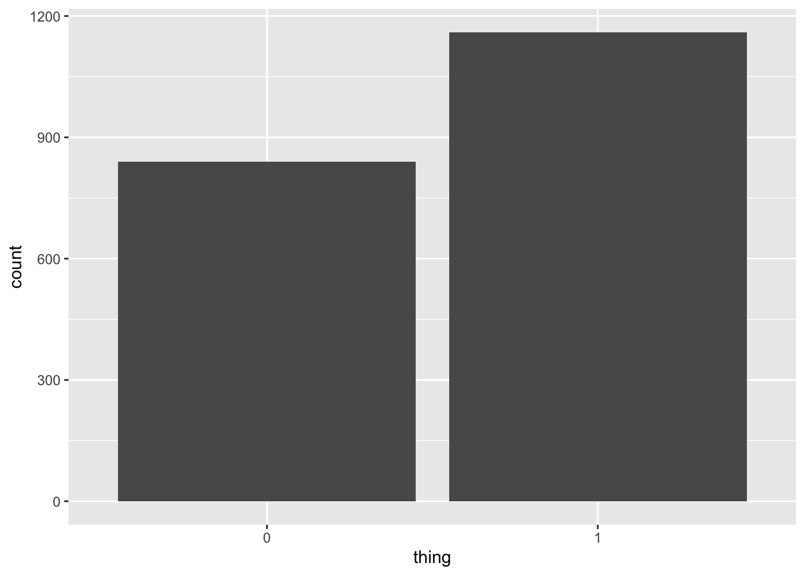
58% of the 2,000 fake people here were 1/TRUE/yes, which is close to the goal of 60%. Perfect.
Rescaling numbers
All these different distributions are good at generating general shapes:
- Uniform: a bunch of random numbers with no central gravity
- Normal: an average ± some variation
- Beta: different shapes and skews and gravities between 0 and 1
- Binomial: yes/no outcomes that follow some probability
The shapes are great, but you also care about the values of these numbers. This can be tricky. As we saw earlier with a normal distribution, sometimes you’ll get values that go below zero or above some value you care about. We fixed that with a truncated normal distribution, but not all distributions have truncated versions. Additionally, if you’re using a Beta distribution, you’re stuck in a 0–1 scale (or 0–10 or 0–100 if you multiply the value by 10 or 100 or whatever).
What if you want a fun skewed Beta shape for a variable like income or some other value that doesn’t fit within a 0–1 range? You can rescale any set of numbers after-the-fact using the rescale() function from the {scales} library and rescale things to whatever range you want.
For instance, let’s say that income isn’t normally distributed, but is right-skewed with a handful of rich people. This might look like a Beta distribution with shape1 = 2 and shape2 = 5:
ggplot() +
geom_function(fun = ~dbeta(.x, shape1 = 2, shape2 = 5))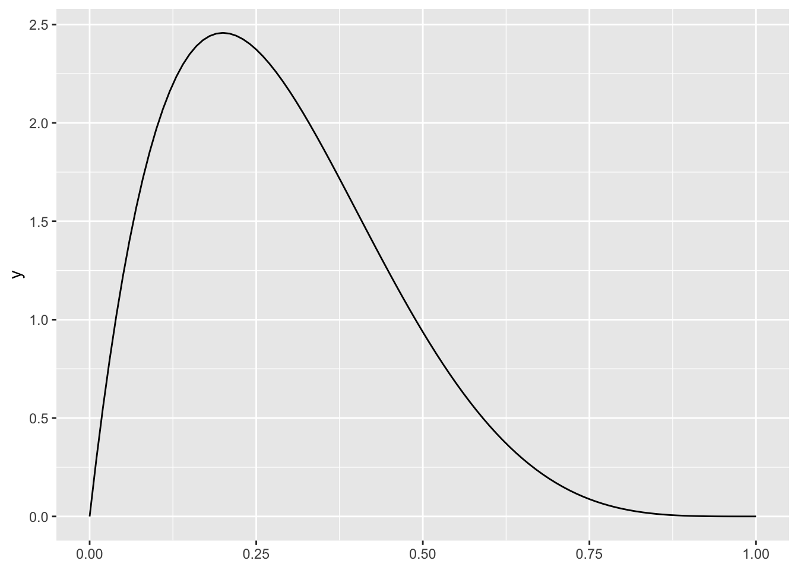
If we generate random numbers from this distribution, they’ll all be stuck between 0 and 1:
set.seed(1234)
fake_people <- tibble(income = rbeta(1000, shape1 = 2, shape2 = 5))
ggplot(fake_people, aes(x = income)) +
geom_histogram(binwidth = 0.1, color = "white", boundary = 0)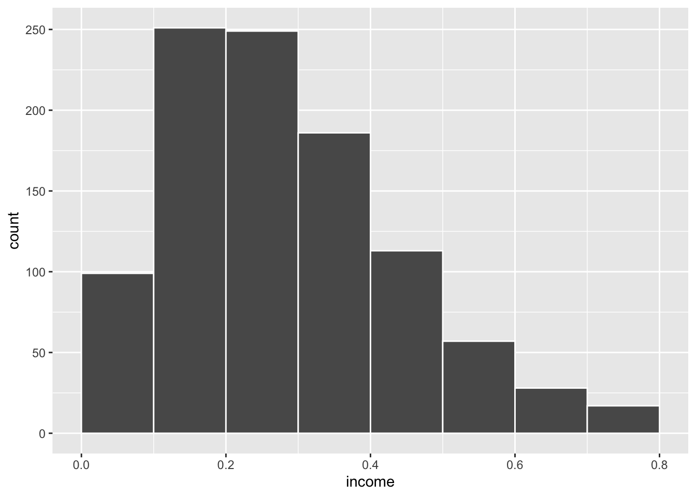
We can take those underling 0–1 values and rescale them to some other range using the rescale() function. We can specify the minimum and maximum values in the to argument. Here we’ll scale it up so that 0 = $10,000 and 1 = $100,000. Our rescaled version follows the same skewed Beta distribution shape, but now we’re using better values!
library(scales)
fake_people_scaled <- fake_people |>
mutate(income_scaled = rescale(income, to = c(10000, 100000)))
head(fake_people_scaled)# A tibble: 6 × 2
income income_scaled
<dbl> <dbl>
1 0.101 21154.
2 0.345 49014.
3 0.553 72757.
4 0.0219 12176.
5 0.380 53036.
6 0.399 55162.ggplot(fake_people_scaled, aes(x = income_scaled)) +
geom_histogram(binwidth = 5000, color = "white", boundary = 0)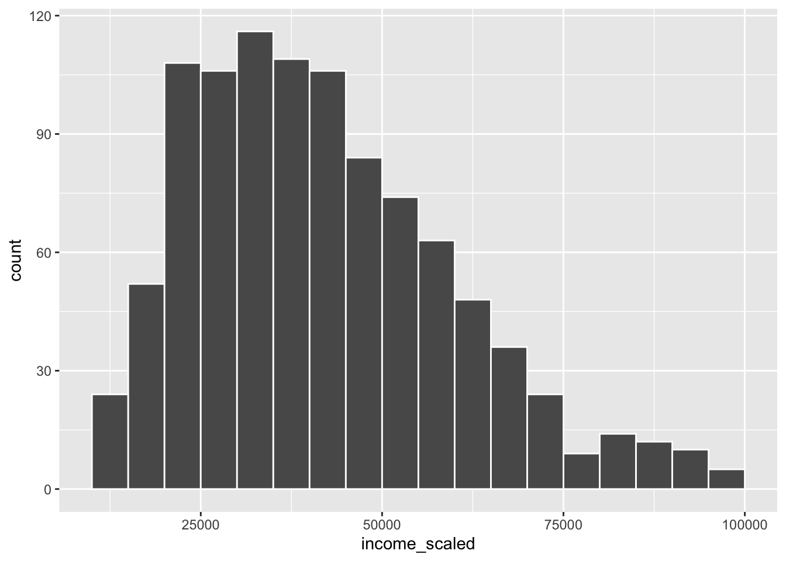
This works for anything, really. For instance, instead of specifying a mean and standard deviation for a normal distribution and hoping that the generated values don’t go too high or too low, you can generate a normal distribution with a mean of 0 and standard deviation of 1 and then rescale it to the range you want:
set.seed(1234)
fake_data <- tibble(age_not_scaled = rnorm(1000, mean = 0, sd = 1)) |>
mutate(age = rescale(age_not_scaled, to = c(18, 65)))
head(fake_data)# A tibble: 6 × 2
age_not_scaled age
<dbl> <dbl>
1 -1.21 33.6
2 0.277 44.2
3 1.08 49.9
4 -2.35 25.5
5 0.429 45.3
6 0.506 45.8plot_unscaled <- ggplot(fake_data, aes(x = age_not_scaled)) +
geom_histogram(binwidth = 0.5, color = "white", boundary = 0)
plot_scaled <- ggplot(fake_data, aes(x = age)) +
geom_histogram(binwidth = 5, color = "white", boundary = 0)
plot_unscaled + plot_scaled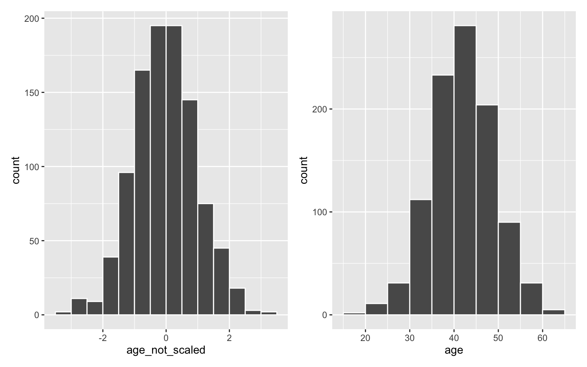
This gives you less control over the center of the distribution (here it happens to be 40 because that’s in the middle of 18 and 65), but it gives you more control over the edges of the distribution.
Rescaling things is really helpful when building in effects and interacting columns with other columns, since multiplying variables by different coefficients can make the values go way out of the normal range. You’ll see a lot more of that in the synthetic data example.
Example
And here’s an example dataset of 1,000 fake people and different characteristics. One shortcoming of this fake data is that each of these columns is completely independent—there’s no relationship between age and education and family size and income. You can see how to make these columns correlated (and make one cause another!) in the example for synthetic data.
set.seed(1234)
# Set the number of people here once so it's easier to change later
n_people <- 1000
example_fake_people <- tibble(
id = 1:n_people,
opinion = sample(1:5, n_people, replace = TRUE),
age = runif(n_people, min = 18, max = 80),
income = rnorm(n_people, mean = 50000, sd = 10000),
education = rtruncnorm(n_people, mean = 16, sd = 6, a = 8, b = 24),
happiness = rbeta(n_people, shape1 = 2, shape2 = 1),
treatment = sample(c(TRUE, FALSE), n_people, replace = TRUE, prob = c(0.3, 0.7)),
size = rbinom(n_people, size = 1, prob = 0.5)
) |>
# Adjust some of these columns
mutate(opinion = recode(opinion, "1" = "Strongly disagree",
"2" = "Disagree", "3" = "Neutral",
"4" = "Agree", "5" = "Strongly agree")) |>
mutate(size = recode(size, "0" = "Small", "1" = "Large")) |>
mutate(happiness = rescale(happiness, to = c(1, 8)))
head(example_fake_people)# A tibble: 6 × 8
id opinion age income education happiness treatment size
<int> <chr> <dbl> <dbl> <dbl> <dbl> <lgl> <chr>
1 1 Agree 31.7 43900. 18.3 7.20 TRUE Large
2 2 Disagree 52.9 34696. 17.1 4.73 TRUE Large
3 3 Strongly agree 45.3 43263. 17.1 7.32 FALSE Large
4 4 Agree 34.9 40558. 11.7 4.18 FALSE Small
5 5 Strongly disagree 50.3 41392. 13.3 2.61 TRUE Small
6 6 Strongly agree 63.6 69917. 11.2 4.36 FALSE Smallplot_opinion <- ggplot(example_fake_people, aes(x = opinion)) +
geom_bar() +
guides(fill = "none") +
labs(title = "Opinion (uniform with sample())")
plot_age <- ggplot(example_fake_people, aes(x = age)) +
geom_histogram(binwidth = 5, color = "white", boundary = 0) +
labs(title = "Age (uniform with runif())")
plot_income <- ggplot(example_fake_people, aes(x = income)) +
geom_histogram(binwidth = 5000, color = "white", boundary = 0) +
labs(title = "Income (normal)")
plot_education <- ggplot(example_fake_people, aes(x = education)) +
geom_histogram(binwidth = 2, color = "white", boundary = 0) +
labs(title = "Education (truncated normal)")
plot_happiness <- ggplot(example_fake_people, aes(x = happiness)) +
geom_histogram(binwidth = 1, color = "white") +
scale_x_continuous(breaks = 1:8) +
labs(title = "Happiness (Beta, rescaled to 1-8)")
plot_treatment <- ggplot(example_fake_people, aes(x = treatment)) +
geom_bar() +
labs(title = "Treatment (binary with sample())")
plot_size <- ggplot(example_fake_people, aes(x = size)) +
geom_bar() +
labs(title = "Size (binary with rbinom())")
(plot_opinion + plot_age) / (plot_income + plot_education)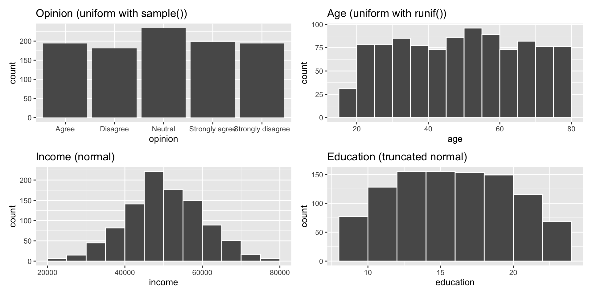
(plot_happiness + plot_treatment) / (plot_size)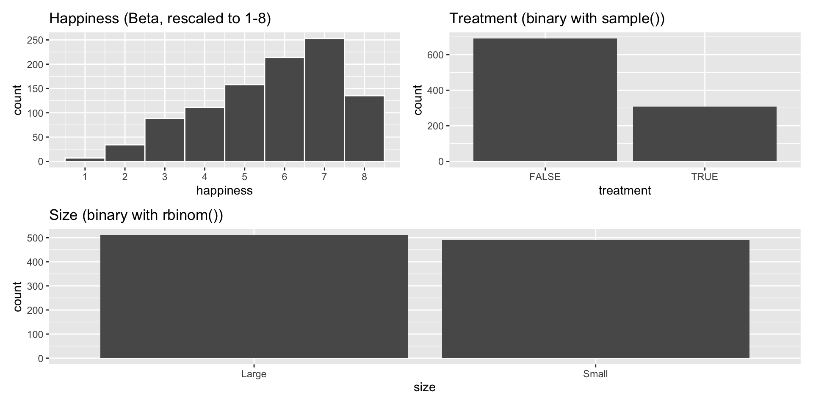